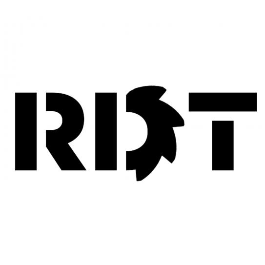

Explored the current research on affordable, comfortable 3D prosthesis to develop an improved or novel prosthetic that addresses research gaps.
Identified body powered hand prosthetic research that could be improved.
Added features such as articulated fingers with flexible hinges, foam, etc. to improve prosthetic performance and comfort.
Developed and tested changes to existing non-assembly hand prosthetic research with Fusion 360 and ANSYS.
Mohamed bin Zayed University of Artificial Intelligence (MBZUAI)
Research Intern (Undergraduate Research Internship Program)
May 2023 - June 2023
Developed a Text-to-3D Avatar Generation Pipeline (Text-to-2D -> 2D-to-3D).
Contributed to the generation of a dataset of high-quality images of 2D human faces and their corresponding captions using a visual large language model.
Assisted in finetuning a Stable Diffusion Model to generate high quality front facing human faces from text prompts.
Designed a new image evaluation metric to compare the quality of generated data to prior work in state-of-the-art prompt-driven image generation models.

Robotic Design Team (RDT) - New York University Tandon School of Engineering
Mechanical Team Member
January 2023 - May 2023
Collaborated with team members from various subsystems (MechE, EE, CompE) under systems engineering framework to maintain weekly progress.
Participated in building an autonomous lunar excavator prototype for the NASA Robotic Mining Competition.
Modelled, designed, and tested various parts using design and simulation software (Solidworks & ANSYS) and manufactured prototypes and parts.
Won second place (out of 43 projects) at the Tandon Research Excellence Exhibit. First NYU RDT team to deposit material.